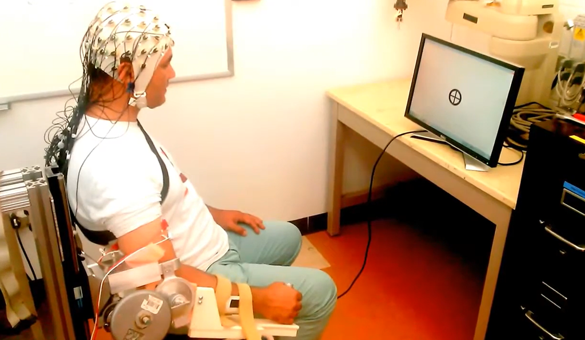

2016
← All researchDesign and optimization of an EEG-based brain-machine interface (BMI) to an upper-limb exoskeleton for stroke survivors Design and Optimization of a BCI-Driven Telepresence Robot Through Programming by Demonstration Design and Optimization of a Real-Time Asynchronous BCI Control Strategy for Robotic Manipulator Assistance On the Classification of Electromyography Signals to Control a Four Degree-Of-Freedom Prosthetic Device HaptiComm-S20: Force-Feedback Characterization of Tactile Stimuli for Deafblind Communication
Neurorehabilitation & Assistive Robotics
Connecting EEG and EMG with exoskeletons, robots, and prosthetic devices.
This work investigates how neural and muscle signals can support interaction with physical devices. Publications cover an EEG interface to an upper-limb exoskeleton for stroke survivors, robotic assistance and telepresence, EMG-based prosthetic control, and tactile communication.

Research questions & methods
- EEG-driven upper-limb rehabilitation and functional electrical stimulation
- Asynchronous robot control and programming by demonstration
- EMG interfaces and tactile assistive communication
Selected publications
2019
2020
2020
2025